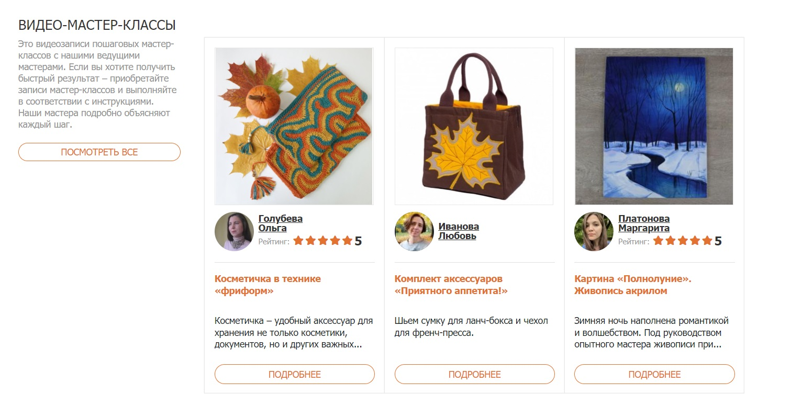
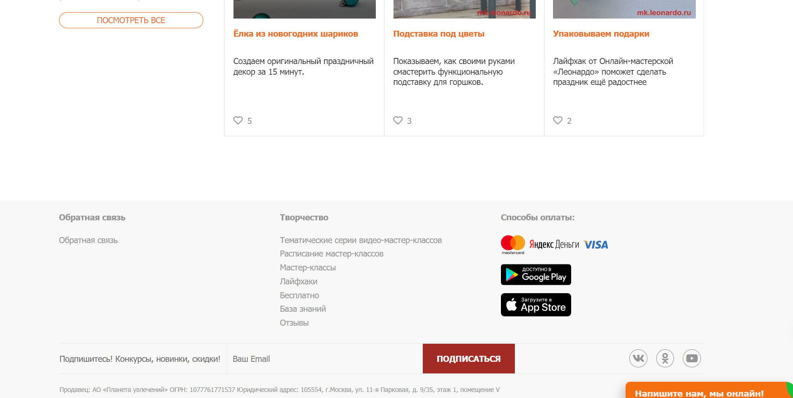
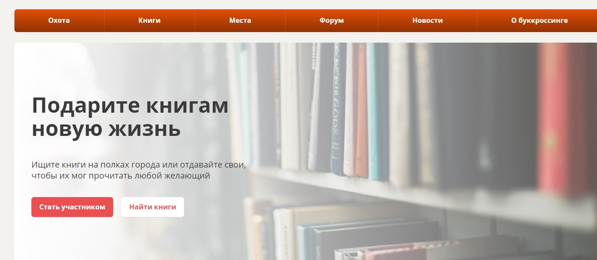
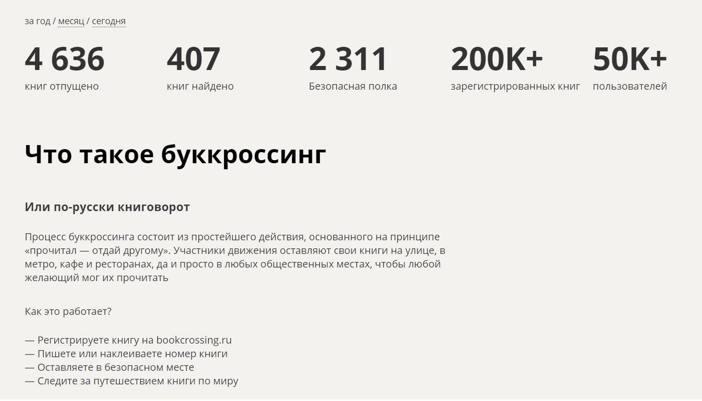

Обо мне
Привет! Меня зовут Александр. Я занимаюсь веб-разработкой и созданием креативных проектов.
Мой опыт в веб-разработке простирается на протяжении нескольких лет, в течение которых я активно участвовал в создании разнообразных веб-проектов. Начиная с простых лэндингов и заканчивая сложными веб-приложениями, я приобрел навыки в полном цикле разработки.
Мое портфолио включает в себя успешные проекты, где я занимался как фронтендом, так и бэкендом. Я уверенно владею языками программирования, такими как HTML, CSS, JavaScript, а также имею опыт работы с современными фреймворками и библиотеками, такими как React.js и Node.js.
Мой опыт включает разработку отзывчивых и кроссбраузерных интерфейсов, оптимизацию производительности веб-приложений, а также внедрение серверной логики и взаимодействие с базами данных.
Я всегда стремлюсь к совершенствованию своих навыков, следя за последними тенденциями в веб-разработке и активно принимая участие в сообществе. Мой подход к работе основан на комбинации творчества, технической экспертизы и стремлении к достижению лучших результатов для клиентов и пользователей.
| Навык |
Уровень |
Описание |
| HTML |
Продвинутый |
Создание семантически правильной разметки веб-страниц. |
| CSS |
Продвинутый |
Стилизация веб-страниц, адаптивный дизайн. |
| JavaScript |
Средний |
Работа с DOM, создание интерактивных веб-элементов. |
| React |
Продвинутый |
Разработка компонентов, SPA-приложений. |
| Node.js |
Средний |
Создание серверных приложений, взаимодействие с базами данных. |
| SQL |
Продвинутый |
Операции с базами данных, написание сложных запросов. |
| Git |
Продвинутый |
Версионирование кода, работа с ветками, pull requests. |
| UI/UX Design |
Средний |
Создание дизайн-макетов, прототипирование пользовательских интерфейсов. |
Портфолио
Проект 1: "Онлайн-магазин Art"
Этот проект представляет собой онлайн-магазин, специализирующийся на уникальных и ручной работы изделиях от талантливых художников и мастеров. HandCraftedHub предоставляет платформу для создания виртуального рынка, где покупатели могут находить и заказывать уникальные предметы искусства. Мы реализовали интуитивно понятный интерфейс для поиска и фильтрации товаров, а также безопасную систему онлайн-оплаты. Каждый продукт снабжен подробным описанием, фотографиями высокого разрешения и отзывами покупателей.


Проект 2: "Социальная сеть для обмена книгами - ReadConnect"
ReadConnect - это веб-приложение, созданное для любителей чтения, которые желают обмениваться книгами и общаться на тему литературы. Пользователи могут создавать профили, добавлять свои любимые книги в виртуальную библиотеку, а также предлагать обмен своими книгами с другими членами сообщества. Мы внедрили систему рекомендаций на основе предпочтений пользователей, форум для обсуждения книг, и систему уведомлений об обменах. ReadConnect способствует распространению читательской культуры и создает вдохновляющее виртуальное сообщество книголюбов.

